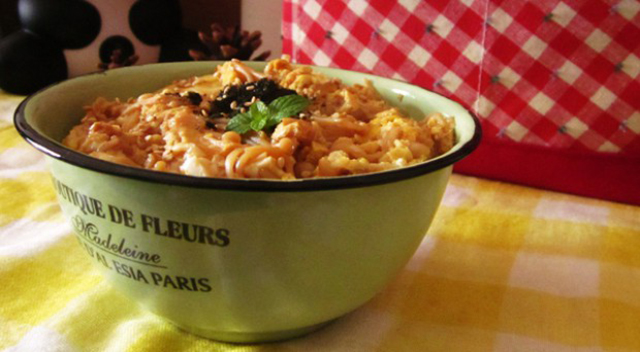

小M家的呵呵哒
06月30日 15:30
家长在家里，看到听到宝宝说“不上幼儿园”要怎么办。
我们还要想一想：就算幼儿园的环境不陌生了，老师也熟悉了，但和家里比起来，幼儿园里可没有家里那么自由——不能想干什么就干什么，要配合班级其他幼儿及班里老师的安排！如果是妈妈带着自己，当看到了好玩的、新奇的东东，妈妈一定会带自己去看吧。可是幼儿园班上三十个宝宝感兴趣的东西可不一定都一样哦，所以，看到喜欢的东东可不一定能看个够。当然，还有类似于，和小朋友之间发生的摩擦、当遇到困难的时候（内向胆小的宝宝想上厕所但不敢和老师说，便会哭起来；即使不胆小的宝宝，睡醒午觉起来看到自己的鞋子被其他宝宝穿去了或不见了，也会哭着找鞋子的；宝宝弄湿了衣服、尿湿了裤子、想拉臭臭又不习惯在家以外的地方拉）。
所以，宝宝更喜欢家里面多一些的，特别是刚入园，一来到班里，就看到其他宝宝狂哭，原本情绪较稳定的宝宝也难免会被影响而“想起妈妈，想回家”。
第一，不要阻止和拒绝宝宝，尽量不要对宝宝说不。 第二，即然家中安排要送宝宝上幼儿园，而且也到了上幼儿园的年龄，或是不送去不行，就 是说，宝宝还是要送去幼儿园的，在这种情况下，请家长这样说： 哦，宝宝不想上幼儿园！——就是用重复性的回应。
我们不能不理睬宝宝，不要漠视宝宝的情绪情感，要让宝宝感觉得到爸爸妈妈是关心他的。
小西写作
热门评论
小M家的呵呵哒
06月30日 15:30
我们不能不理睬宝宝，不要漠视宝宝的情绪情感，要让宝宝感觉得到爸爸妈妈是关心他的。摆正心态很重要，要相信宝宝是可以开心地在幼儿园和其他小朋友一起快乐生活的。

小M
05月24日 16:25
其实，教育这东东，懂和不懂就差那么一点点！